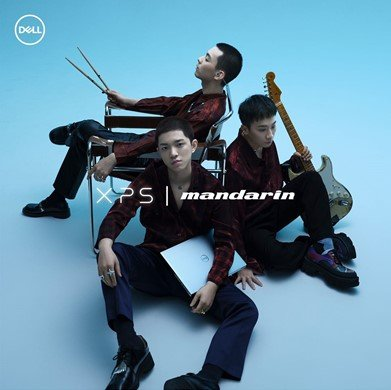

我爱五条人!!!

我爱五条人!!!

我爱五条人!!!

作者：bala 发表时间：2020/10/5
五条人是一支来自中国广东省海丰县的民谣乐队，以海丰话方言、草莽架势、乡土关怀而闻名[
五条人由两个海丰人“阿茂”和“仁科”于2009年3月组建[2]。2001年，阿茂高考失利后从海丰来到广州，以摆摊贩卖打口碟为生，并受到了国内外唱片的影响。仁科则在海丰的工艺美术班里学习绘画[3]。2003年的春节，海丰民间组织了一次“海丰原创音乐会”，阿茂、仁科二人因都参加了演出而结识，这也使得仁科后来决定搬至广州石牌村投靠阿茂，并从事摆摊贩卖盗版书的工作，二人勉强维持生计。2007年广州政府为筹办2010年亚运会严打路边摊贩，二人转而租房开办唱片店，自此开始写歌。2009年，在数位朋友的帮助下，二人正式组建五条人，并录制了首张专辑《县城记》
对于“五条人”名字的来源，其成员说法不定。最常见的说法是取自杜可风执导的电影《三条人》，“条”为粤语中人数之量词，五条人即为五个人，寓意乐队红红火火，人丁兴旺
五条人非科班出身，其音乐大多以平民语言讲述过去的人和事，关注于身边的情景，是社会急剧转型的记录[6]。在这些记述中，创作者自身亦是其描写对象中的一员，五条人的对白、呐喊、谩骂容易让人想起海陆丰当地的民风[1]。与一般民谣的“治愈系”基调不同，五条人的题材多是关于城乡文化差别，全球化与本土主义的冲突[7]。有评论认为五条人的音乐并非真正意义上的民谣[8]，而是民谣、摇滚和民间野戏的结合体[9]
作者名：bala 发表时间：2020/10/5
Mandarin乐队，是成立于2019年的中国内地摇滚乐队，由主唱/合成器Chace、吉他手肖骏、鼓手安雨组成
尽管 mandarin乐队刚成立不久，但在“乐队的夏天2”中，翻阅乐队成员的档案时，意外地发现这三位成员并没有什么共同之处。由于是新乐队，很多网友都很好奇， mandarin乐队是什么风格？据介绍， Mandarin乐队共有三名成员，分别是主唱 Chace和合成器，吉他手肖骏和鼓手安雨。只要有关于 mandarin乐队成员的资料，就来看看吧！
参与“乐队夏日2”之前，有些网友对 Mandarin乐队并不熟悉。怪不得，毕竟这是个刚成立不久的乐队。尽管说是新乐队，但有三名成员并不算少。大家都知道， Mandarin乐队才刚于去年成立，他们的风格是摇滚，电子乐队，这也是 Mandarin乐队首次在荧屏上亮相哦！但是两名成员却没有。
我爱五条人!!!
我爱五条人!!!
我爱五条人!!!
作者名：bala 发表时间：2020/10/5
| 一 | 二 | 三 |
|---|---|---|
| 仁科 | 仁科2 | |
| 仁科 | 仁科2 | |
| 总计 | 仁科4 | |